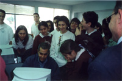
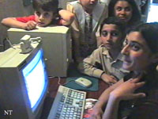
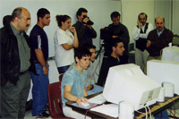
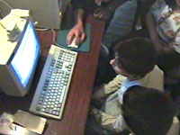
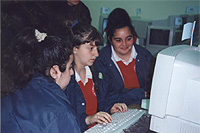
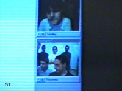

|
THE FIRST VIDEOCONFERENCE:
Six schools, three continents, one team
The subject of the May 9th
Yerevan – Marseilles – Los Angeles videoconference was
a collaboration between the students during which they answered
each other’s questions regarding the locations and details
of Armenian monuments. The students would find images of these monuments
in Armenian Web sites, and would use the whiteboard to draw their
locations on a map of Armenia, while they exchanged information
via the video link and text in Armenian. The 3PN
is collaborative experience that began in January of 1998 as NNP’98,
linking ten Armenian schools in Armenia, France, Lebanon, Canada
and the United States through the Internet. Participating students
spend one or two sessions every week working on activities specially
designed to acquaint them with each other, with the Internet, and
with their Armenian heritage.
Participants in the conference
were Schools #170 and #198 from Yerevan; The Hamazkain School in
Marseilles; and the AGBU Manoogian Demirdjian School, Alex Pilibos
Armenian School, and Chamlian Armenian School in Los Angeles. The
Armenia node of the conference was made possible by Arminco, the
Internet Service Provider in Yerevan, under the project management
of the 3PN Yerevan technical coordinator, Ana
Karakhanian. Arminco volunteered substantial technical and human
resources to this event, and hosted more than twenty participating
students in Yerevan. In Los Angeles, students used computer
facilities at the Manoogian Demirdjian School, as well as a second
node at the Alex Pilibos computer lab. Teachers in charge of the
3PN, Aram Chouljian, Minas Kojayan, Nazareth
Apanian and Saro Nazarian participated actively. In Marseilles,
France, students gathered at the Hamazkain School, supervised by
the 3PN technical coordinator Arsen Karabajakian
and the school’s principal, Loussine Malikian.
Students
and staff work on the 3PN
and participate in the videoconference





 |
Originally scheduled for 30
minutes, the conference lasted almost one-and-a-half hours due to
the excitement of the participating students. In addition to the
planned exercise, students exchanged greetings as well as general
cultural, social and personal information over the video link, in
an atmosphere of fun and intense collaboration. One of the high
points of the conference occurred when a student in Yerevan asked
to see one of her counterparts in Los Angeles, with whom she had
been exchanging email and collaborating through the 3PN. Marie Lou Papazian, the e4d institute director pointed
out that fulfilling this kind of need for a visual and personal
contact was exactly the kind of complementary functionality that a
videoconference brings to the global activities of the 3PN. "It is also significant," pointed out
Papazian, "that the oral and written interaction between
students naturally took place in Armenian, despite the
predominance of English on the Net. The only language common to
these kids in Armenia, France and the US is Armenian."
Note: Yerevan videoconference
photos, Marked with the "NT" logo, are provided by Noyan
Tapan.
> The
second videoconference - Los Angeles . Yerevan
< Back
to the Resource Center |